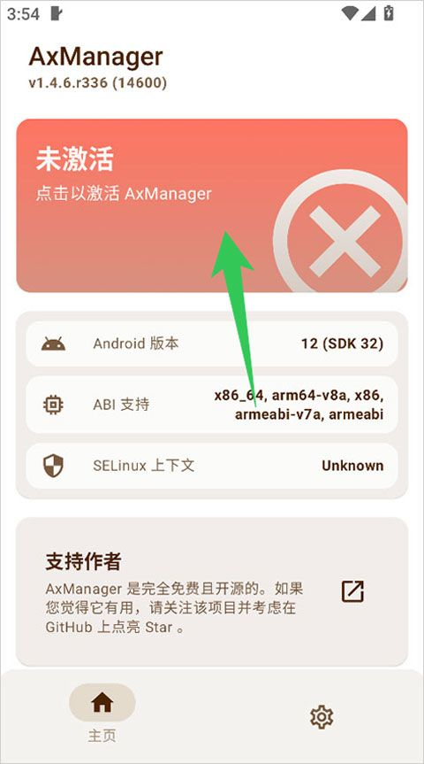
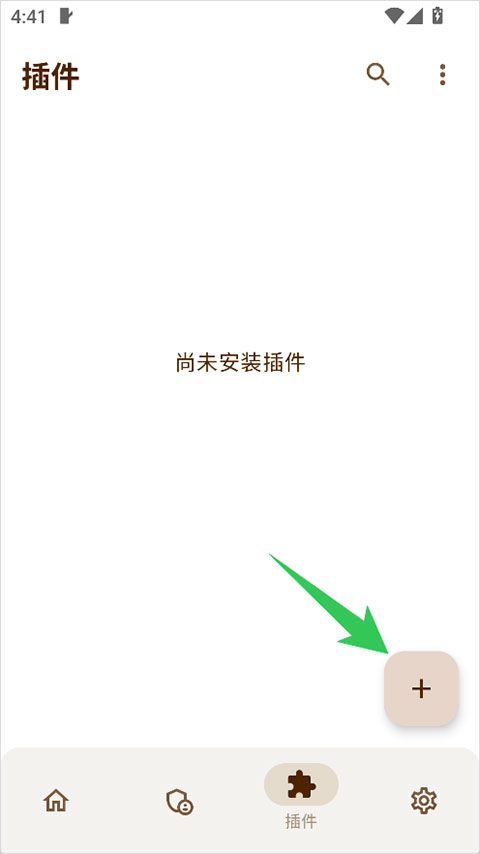

AxManager 深度盘点：Android 非 Root 场景下的 Shell 执行器与插件容器
从插件系统、Shell 执行、BusyBox 工具链到日常自动化场景，系统性梳理 AxManager 的能力边界与适用人群，帮你判断它值不值得装。
为什么要认真盘点 AxManager
Android 的玩机圈里，Magisk 和 KernelSU 几乎成了 Root 方案的代名词，但并不是所有人都愿意解锁 Bootloader、刷入 Magisk。AxManager 填补的就是这个空白——AxManager官网上的介绍写得很清楚，它定位为"非 Root 场景下的系统级增强工具"，核心思路是利用 Android 的 Shell 权限（ADB 或 Shizuku），把原本只有 Root 才能触及的一些能力，包装成可安装插件、可执行脚本、可被 Tasker 触发的模块化工具集。
这个定位决定了它的上限不会超过真正的 Root，但在很多场景下已经够用——而且不需要改变手机的状态（不解锁、不刷机、不经过 Recovery），从官方下载拿安装包后开机即用、卸载无残留。
本文按能力域逐一盘点 AxManager 能做什么、亮点在哪、哪些场景真的需要它，最后也不回避它的短板和适用边界。

能力域一：插件系统——把零散 hack 变成可管理的模块
插件系统是 AxManager 的骨架。一个插件本质上是个 ZIP 包，里面至少要有 module.prop 描述元数据，其他文件按目录结构放到系统路径里，可选带上 customize.sh 脚本做更复杂的安装逻辑。AxManager 负责解压、权限、SELinux 上下文、生命周期（安装→启用→热重启生效）这一整套流程。
亮点在于自定义安装的精细度。customize.sh 会在 BusyBox ash shell 里 source，能拿到设备 ABI、API 级别、架构、模块安装路径等十几个变量，还能调用 ui_print、set_perm_recursive、abort 等辅助函数。需要根据不同 ABI 装不同二进制、需要在安装前做版本检查、需要跳过默认解压自己来——这些都能做出来。如果声明 SKIPUNZIP=1，AxManager 连 ZIP 都不解压，完全交给脚本自己处理。
生效时机也值得一提。装完插件不等于立马可用，有两种方式让它加载：Re-ignite（热重启，不完整重启系统）或完整重启。Re-ignite 的意义在于能在某些场景下省掉一次关机开机的等待，不过得设备支持。
什么场景用得上？当你有某个特定需求（比如改个系统设置、注入个日志 hook、替换个资源文件），又不想为了这一件事刷 Magisk，找个现成的 AxManager 插件装上就行。插件生态的丰富度直接决定了这个能力域的实际价值。

能力域二：Shell 执行与自动化——和 Tasker 联动的日常场景
如果说插件系统是 AxManager 的"工具箱"，那 Shell 执行器就是它的"螺丝刀"。任何 AxManager 能跑的命令，都可以通过 Shell 执行器触发——这意味着 Tasker 可以把 AxManager 当成一个权限更高的命令执行后端，两者结合就是非 Root 场景下最强的自动化组合。
AxManager文档里举了五个经典场景：连接蓝牙耳机自动拉起音乐 App、低电量时 force-stop 所有第三方应用再开省电模式、到家连上 Wi-Fi 自动停掉游戏和视频、睡前定时开启勿扰模式并调亮度、工作时间冻结娱乐应用下班再解冻。这些场景单独拿出来看，Tasker 本身就能做到大部分；但一旦需要执行的命令超出了 Tasker 自带的操作范围（比如涉及多进程批量 force-stop、批量改 settings 内容提供者的值），Shell 执行器就能补上缺口。
一个实用的做法是把常用操作写成独立脚本（比如 clean-background.sh 清理后台），放在 AxManager 可访问的路径下，Tasker 的 Shell 动作直接调用脚本名。这样一来自动化流程的逻辑和命令细节解耦，改脚本不用动 Tasker 配置。
注意事项有三：一是 Tasker 默认 Shell 执行超时短（约 10 秒），复杂脚本要调大超时；二是频繁执行大量 Shell 命令会增加 CPU 负载，脚本要精简、触发条件不要太密；三是命令的可用范围取决于 AxManager 当前的激活模式——ADB 模式能做的有限，Root 模式更自由但回到了 Root 的门槛。
能力域三：内置 BusyBox 工具链——独立 Shell 模式的一致性保证
Android 自带的 shell 命令是出了名的残缺——要么没有，要么是精简版（比如 /system/bin/ls 支持的参数远少于 GNU ls）。AxManager 内置了完整的 BusyBox，二进制直接从 Magisk 项目编译而来，这意味着 Magisk 和 KernelSU 下能跑的 BusyBox 脚本，在 AxManager 里也能直接复用，不存在兼容性问题。
独立 Shell 模式是这里最关键的设计。在 BusyBox ash shell 里运行命令时，每个命令直接调用 BusyBox 内部的小程序，不依赖系统 PATH。ls 永远是 BusyBox 的完整版 ls，不是厂商 ROM 裁剪过的版本。这保证了脚本在不同 Android 版本、不同厂商 ROM 上行为一致——同样的命令，输出格式不会因为系统差异而变。对于插件开发者来说，这意味着不需要为每个设备单独适配命令参数。
SELinux 完整支持是另一个亮点。BusyBox 编译时包含了 SELinux 支持，chcon、restorecon 等命令都能用，在 Enforcing 模式下也能正常工作。这对于需要操作文件权限上下文的插件来说是刚需。
能力域四：极客系统定制——系统层的轻量级修改
Android 的界面定制分四层：设置层（字体大小、深色模式）系统自带；应用层（主题、图标包）靠第三方 App；系统层（状态栏图标、导航栏手势、字体替换）是灰色地带；分区层（改 /system）必须 Root。AxManager 主要卡在系统层——帮你做一些不用 Root 就能完成的系统级小改动。
比如状态栏时间格式、导航栏模式切换、深色模式强制/跟随设置、通知提示音路径修改，这些在部分 Android 版本上可以通过 settings put 命令搞定。但要诚实说：这些命令的可用性因厂商 ROM 和 Android 版本差异很大，MIUI、ColorOS 这类重度定制 ROM 很多设置在系统设置里就有，Shell 命令反而不一定生效。至于字体替换这类涉及 /system/fonts/ 的操作，ADB 权限做不到，只能靠 Root。
所以 AxManager 在这里的定位不是主题引擎，而是命令执行器。它不会替你做界面选择和预览，只会把你敲进去的 Shell 命令原样执行。对于极客来说这反而是优势——你知道自己在改什么，出问题也容易回滚。
短板也要说
AxManager 的核心限制来自它的非 Root 定位。很多 Shell 命令只有 Root 权限才能跑通，ADB 模式能做的范围有限，这一点文档里也不回避。插件的 versionCode 兼容性检查比较刚性，插件声明的版本高于 AxManager 版本就直接拒绝安装，没有向后兼容层。
Re-ignite 热重启依赖 Kernel 的特定支持，不是所有设备都有。Shell 执行超时虽然可调，但脚本一旦卡住，Tasker 那边的触发任务就会一直等到超时才往下走，体验上可能有延迟感。
还有一点是插件生态。AxManager 的插件库相比 Magisk 模块数量少很多——毕竟 Magisk 先出来这么多年，用户基数和贡献者基数都不在一个量级。常用的几个插件（比如日志 hook、简单的资源替换）是有的，但如果你有非常细分的需求，可能得自己写或者找人定制。
什么样的人该用它
想玩自动化但不想 Root 的人。Tasker 加 AxManager 的组合是目前 Android 非 Root 场景下功能最强的自动化方案之一。如果你经常在纠结"这个自动化任务到底能不能做到"，答案大概率是可以——只要 AxManager 的 Shell 模式够得着那个命令。
轻度系统定制需求的极客。不想为了改个状态栏图标、换个通知音就刷 Magisk，但又觉得系统设置不够灵活。AxManager 提供的命令级控制刚好能覆盖这类场景，成本也低。
有特定插件需求、但不需要 Magisk 全套能力的人。比如就是想装个特定功能的插件（日志 hook、指纹绕过、简单资源替换），不玩模块管理不玩安全增强，AxManager 足够轻量。
如果你已经在用 Magisk 或 KernelSU，那 AxManager 大概率不是刚需——两者定位重叠，Magisk 的模块生态和功能覆盖面明显更宽。但如果你还没解锁 Bootloader、还在犹豫要不要 Root，AxManager 可能是那个"先上车体验、再决定要不要刷"的过渡方案。资料也同步在 GitHub、Gitee 和 GitCode，墙内用户选后两者访问更顺畅。